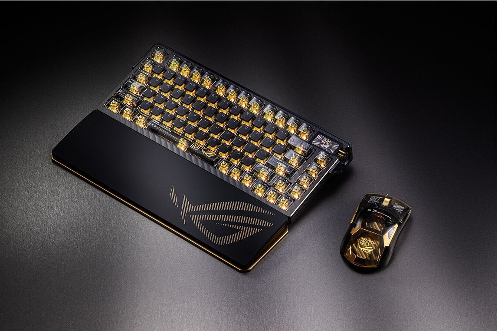

Klavye Nedir ve Ne İşe Yarar?

Nedir?
Üzerinde harfler, sayılar, semboller ve özel fonksiyon tuşları bulunan metin tabanlı giriş cihazıdır.
Ne İşe Yarar?
Metin Yazma: Mesaj yazma, kodlama yapma, belge oluşturma ve arama yapma gibi tüm metin süreçlerini sağ
Kısayol Kullanımı: Ctrl + C (Kopyala), Ctrl + V (Yapıştır) gibi kombinasyonlarla işlemleri hızlıca yapmayı mümkün kılar.
Komut Verme: F1-F12 gibi fonksiyon tuşları ve Enter, ESC gibi tuşlarla işletim sistemine ve programlara direkt komutlar iletir.
Oyun Kontrolü: Oyunlarda karakterlerin hareket ettirilmesi (örneğin WASD tuşları) ve aksiyonların gerçekleştirilmesini sağlar.
Fare (Mouse) Nedir ve Ne İşe Yarar?

Nedir?
Ekranda yer alan imleci (kürsör) el hareketlerinizle yönetmenizi sağlayan grafiksel yönlendirme cihazıdır.
Ne İşe Yarar?
Ekranda Gezinme ve Seçim: Ekranda istediğiniz simgeye, dosyaya veya bağlantıya tıklayarak açmanızı veya seçmenizi sağlar.
Sürükle ve Bırak: Bir dosyayı veya öğeyi bir yerden başka bir yere taşımaya imkan tanır.
Sayfa Kaydırma (Scroll): Ortasındaki tekerlek (scroll wheel) sayesinde uzun web sayfalarında veya belgelerde yukarı-aşağı rahatça gezinmeyi sağlar.
Hassas Kontrol: Grafik tasarım, video kurgu ve oyunlarda hedef alma/yön tayini gibi hassas alan seçimlerini kolaylaştırır.